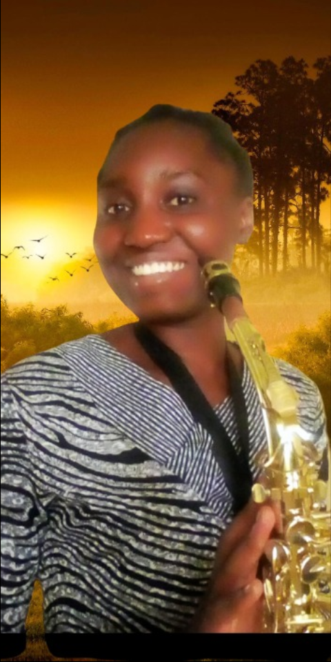

Hello!
My name is Nanbyen Peace Lazwan, I'm a female, I am dark in completion and tall in height, I am a Nigerian, from Plateau state, Jos city and my local government is Langtang North.
I love God, my parents and siblings, I also love God-fearing people. I detest people that are dishonest, disloyal, crafty; people who are proud, selfish, envious, jeolous, lazy and dirty.
I am from a nuclear family, I have four siblings: three more girls and a boy. Fun fact: I am a twin
I am also a student, studing at University of Jos, Faculty of Engineering, Department of Electrical Electronics Engineering, I am presently in 400L and currently undergoing my SIWES (Student Industrial and Workshop Experence Scheme), my SIWES experience is amazing, and I am really learning alot.
I love flowers! Flowers just have a way of bringing smiles, it lighens the environment and makes everyone happy
Its fragrance is spectacular and its so beautify to look at!
I also love to play saxophone, I started learning the saxophone in the year 2018 there about, I'm not really sure. When I started playing the saxophone, it was a little hard. First thing I told my saxophonist was that my fingers were short
because my fingers were not reaching the last tomb bell, it was difficult for me to blow just the mouth piece because saxophone have a special way of placing your mouth, my lips and lower pallet really hurt after playing and also my neck hurts after long play.
But right now, it's just a story, a love everything about it and I have become better, I am trusting God for my personal saxophone
Age:
18-20Pets I love:
CatWrite down my shoe size
InchesThis is my amazing friend, her name is Victory Damilola Obiye, She is also an engineering student, she is studying mining engineering
She loves and fear God, she have a beautiful heart, she is humble, kind, lovely, caring, a lot to explain her personality. She is also a music minister and a drama minister